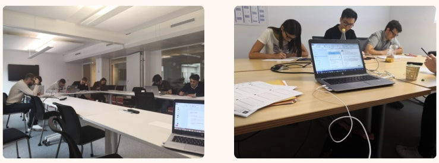
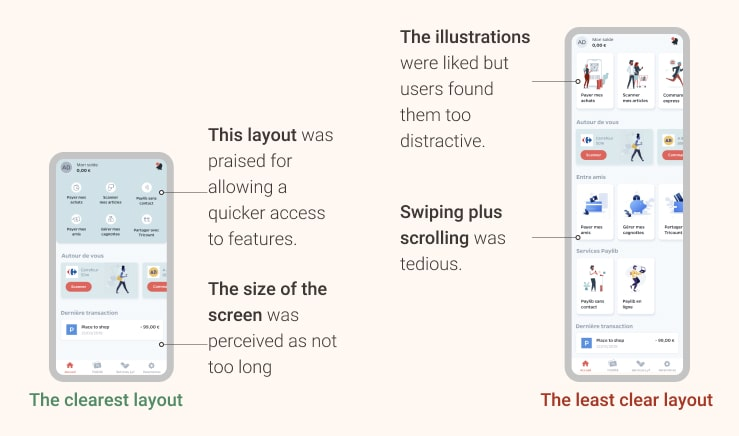

Role : One-man UX Research team, worked closely to Bacary Mbaye (Product Owner),
Aymeric Sauce (Product Marketing), Naama Bassan (Design Lead), Ane Uriarte &
Martin Berbesson (Product Designers). Supervised by Alex Szyda (CPO)
Methodology : Competitive Benchmark, Heuristic Analysis, User Testing, Wireframe,
Prototype, Guerilla testing, UX Workshop Facilitation, Remote UserTesting
Tools : Google Forms, Typeform, Figma, Sketch, Marvel, Invision,
Notion
Time: Approx. 10 months (and ongoing!)
Context
This redesign project, which is by far the longest and more interesting project I've worked on, is the result of several observations which came to the awareness of our product team throughout 2019:
The current layout of the features was (and still is to some degree) a source of confusion for users, particularly regarding the information architecture. At that time, the vertical list display did not offer an optimal presentation of the different features as well. Also, the architecture was not “future-proof” and therefore not optimal for adding new features. And to finish, our UI started to feel outdated compared to our competitors.

The solution we chose to implement was to redesign our homepage. I
started this project from a UX focus, which needed to take into account two major points : first, the users' needs
(obviously!), both the newcomers to guide them
through the discovery of the app, but also the old-timers, as they
should not be lost in the transition.
But also, to take into account the internal insights, through the feedback of internal
collaborators
and stakeholders.
In order to get everybody on board on this project with a
huge impact on several teams, it was mandatory to include them in the
design process and to benefit from their expertise.
Facilitating the workshops
The workshops step lasted over 3 months in total. In total, I carried the 7 workshops, with more than 35 participants from different teams. The goal was to use the "6-to-1 methodology" to generate as many ideas as possible and identify recurrences of patterns. It is a workshop method, where participants produce 6 different wireframes, and then merge these 6 wireframes into a complete and final version.

While sharing with the group, ideas are quickly
generated and this allows for a very productive way of gathering
ideas. This is also a very efficient way of seeing which ideas are
coming back the most often, and notice those who captured the most
interest!
The numerous feedbacks allowed us to gather expectations regarding the
new Home, such as:
• A need to categorize the different functionalities.
• A desire for new types of architecture, with two recurrent layouts
amongst propositions: a deep architecture via menus on the home or a
flat layout with a direct display of the functions.
• A better naming of the features, with more contextual wordings, for
example, naming a feature "Pay in store" instead of
something more abstract like "Pay".
• An addition of new features, like for example a quick action button
contextual to the users' geolocation.
From these workshops, we were also able to produce several prototypes. These prototypes were the start of our user tests, and each had different variables such as the size and number of illustrations and buttons, or the presence of swiping elements.
This allowed me to assess what were the users' expectations and understanding regarding our new homepage, as well as what were their preferences in terms of clarity and ease of navigation.

User testing
I undertook several waves of qualitative iterative sessions with more than 30 participants that I recruited via social networks. Some were users of Lyf Pay and others were not. The tests lasted for a total of 2 months.

The test protocol was relatively simple: presenting the different wireframes for 5 seconds to identify the elements that stand out, the testers were invited to give their opinion about the clarity of the screens.
I specifically asked for the clarity of each screen, as it appeared
that was ultimately the best indicator to determine the effectiveness
of the interface. Asking "which is the clearest layout to
you?" may give different results than "which layout do you
prefer?".
Many users have for example declared "that a
wireframe was visually pleasing, but confusing because it contained
too much information"or even "than an interface was not beautiful, but clear because
it seemed more functional". I prefer to work with the functional one.
Clarity is, to me, the best north star when building interfaces, you can
always make something more beautiful and shiny but you can't cheat yourself of an
information architecture problem, even with the best UI in the world!
It has appeared that users vastly preferred a more functional version, with a set of features directly laid out on the Home, compared to a version containing prettier illustrations but occupying more visual space. They wanted to have access to everything the app offers, rather than having to search for it.
As we progressed, we refined the prototypes more and more. The focus of the tests also went slowly from assessing the clarity of the interface, with a presentation of screens in standalone, to a more global perception of the user flows within the app, and more full-fledged prototypes. As the scope progressed, I decided to implement quantitative tests, involving more and more testers. This was possible with unmoderated remote user tests using Testapic, carried out with 100+ non-users of Lyf Pay.
Having multiple testing methods, and moving from qualitative to
quantitative had several advantages in my opinion. It was cheaper and
faster to carry small qualitative 1-to-1 sessions at first, before
asking several dozen people to evaluate prototypes. The first insights
are then useful to guide the latter test sessions. Having a good grasp
of the users' understandings, beliefs and perceptions first provides a
solid basis for design decisions, to ensure that the product is simple
enough to be understood and still usable.
Assessing the results
After all the tests were done, I was able to validate some hypotheses about the layout and to finish the home layout with more confidence in our previous choices. Users could complete our main use cases and understood what we showed them, so we were happy! Overall it was very conclusive and made it possible to arrive at the version of the application currently available.
The main changes were a new structure of the Homepage, with three main categories for
the
three areas of Lyf Pay: Payment and loyalty cards, peer-to-peer money
features and new experiences Of shopping, such as our scan & o,
click & collect...
And more to come :)
In addition to this, we rearranged the existing features, to add
clarity, such as the money request and built a more elaborate and refined iconography, for a more colorful
experience.
Wrapping up
As a User Researcher, I am thrilled to have led the UX effort of this project, which also could not have been possible without the help of several other teams. Starting from an initial information architecture problem, we managed as a group to offer a new product that worked better, looked better and allowed us to prepare for multiple evolutions.
The effects of this redesign came almost overnight and were quite easy
to measure, with an increase of
40+% of our peer-to-peer functionalities and
a satisfaction rate of 90+% from a
questionnaire sent to 1000 of our users.
This redesign also allowed me to realize the importance of communication
and the facilitative aspect of UX. Beyond user interfaces and needs,
ensuring that the various stakeholders are well integrated into any
co-design effort is vital. As said earlier, the redesign of an
application has a considerable impact on several entities, and they all
have to have a say in the product.
In the end, this project worked out so well it turned out to become a
continuous improvement project, of which you only saw the first part
today, with a much better, much bigger redesign coming next!
Stay tuned :)
Want to read about the side project I've done ?